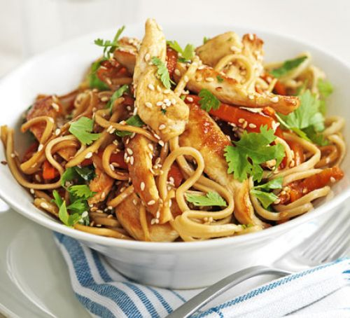
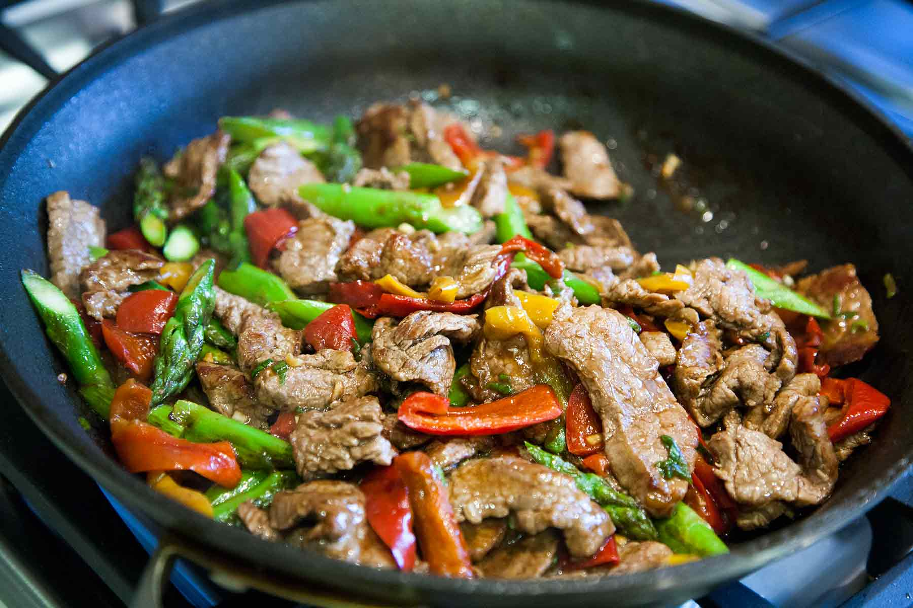
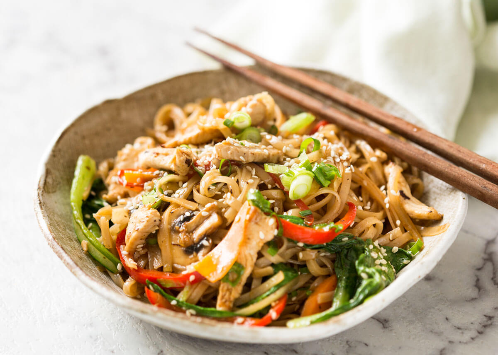

Delicious easy to make Stir-fry Recipe
Here is a Stir-fry recipe that is simple and easy to follow.
It's an exquisite dish that takes little effort and time.



Ingredients
- 500g Chicken, Beef or pork (Cut in bits of sizes)
- 1kg of vegetables cut in bits (Carrots, Peppers , Onions and Snap-peas)
- 1 tbsp optional aromatics(Garlic, ginger or shallots)
- 2 tbsp chopped fresh herbs(basil or cilantro)
Stir-fry sauce ingredients
- 1 cup broth
- 1 tbsp soy sauce
- 1 tbsp sugar
- 1 tbsp rice wine vinegar
Directions
1. Pre-heat the pan on a medium-high temperture and add 2 tablespoons of oil
2. Add your sliced/chopped pieces of meat and fry until brown on each side. Remove from pan and place on a plate

3. Then add your densest veggies(carrots and bell-pepper) into the pan and cook for 1 minute

4. Now your quick cooking veggies(orions and snap-peas) for anther minute

5. Add in all you aromatics (Garlic, ginger or shallots), adding or choosing your aromatics in optional

6. Add the meat into the pan aswell as the sauce and cook for a minute until bubbling

7. Any wanted herbs can be added
8. Serve dish hot with rich or noodles
Stir-fry sauce directions
Whisk the stir-fry ingredients into one medium-bowl

What I've learn't
- How to import images both from url link and from directories
- How to express my creativity with simple html
- Learn or gain more intel on making my favourite dish
- Creating a lift within html